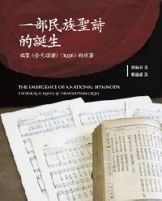

|
|
775祝願平安 |
Peace to you, sisters, brothers, peace that no words define, Christ keep you safe in spirit, Christ Jesus in you shine! These, these are the things to ponder, these things deserve our praise. All that is true with honor, all that will claim our trust, all that stands tall and steadfast, all that is fair and just, these, these are the things to ponder, these things deserve our praise. All that is pure of being, all that no wrongs distort, luminous things and lovely, all things of good report, these, these are the things to ponder, these things deserve our praise. Peace to you, sisters, brothers, peace that no words define, Christ keep you safe in spirit, Christ Jesus in you shine!
|
|
|
|
|
|
|
|

新普天頌讚 #775 祝願平安 聖詩分析 https://www.hkchurchmusic.org/index.php/component/allvideoshare/video/hup775 - 775祝願平安
| Short Name: | Shirley Erena Murray |
| Full Name: | Murray, Shirley Erena, 1931- |
| Birth Year: | 1931 |
| Death Year: | 2020 |
Shirley Erena Murray (b. Invercargill, New Zealand, 1931)
studied music as an undergraduate but received a master’s degree (with honors) in classics and French from Otago University. Her upbringing was Methodist, but she became a Presbyterian when she married the Reverend John Stewart Murray, who was a moderator of the Presbyterian Church of New Zealand. Shirley began her career as a teacher of languages, but she became more active in Amnesty International, and for eight years she served the Labor Party Research Unit of Parliament. Her involvement in these organizations has enriched her writing of hymns, which address human rights, women’s concerns, justice, peace, the integrity of creation, and the unity of the church. Many of her hymns have been performed in CCA and WCC assemblies. In recognition for her service as a writer of hymns, the New Zealand government honored her as a Member of the New Zealand Order of Merit on the Queen’s birthday on 3 June 2001. Through Hope Publishing House, Murray has published three collections of her hymns: In Every Corner Sing (eighty-four hymns, 1992), Everyday in Your Spirit (forty-one hymns, 1996), and Faith Makes the Song (fifty hymns, 2002). The New Zealand Hymnbook Trust, for which she worked for a long time, has also published many of her texts (cf. back cover, Faith Makes the Song). In 2009, Otaga University conferred on her an honorary doctorate in literature for her contribution to the art of hymn writing.
I-to Loh, Hymnal Companion to “Sound the Bamboo”: Asian Hymns in Their Cultural and Liturgical Context, p. 468, ©2011 GIA Publications, Inc., Chicago
紐西蘭女詩人茉瑞雪莉（Shirley Murray，1931 生）
她的赞美诗写作始于1970年代，经常将圣安德鲁教堂用作圣诗集的测试场所。 许多不同的作曲家都在她的赞美诗中加入了音乐。她的赞美诗已被翻译成多种欧洲和亚洲语言，并在全球140余首赞美诗中都有代表。 除新西兰外，它们还特别用于北美。
Tune THING TO PONDER
陳偉光 2004
Peace that no word or secret can tell
Inner Peace:
Refrain:
Dona nobis pacem.
Dona nobis pacem.
Dona nobis pacem.
Dona nobis pacem.
1 Peace that no word or secret can tell,
peace deeply sure that all will be well - [Refrain]
2 Peace that knows gifting, letting things go,
peace that accepts when healing is slow - [Refrain]
3 Peace from the living waters of faith,
blessing our life, anointing our death - [Refrain]
4 Crowded and clouded, such are our days:
peace is our prayer, our purpose, our praise - [Refrain]
World Peace:
Refrain:
Dona nobis pacem.
Dona nobis pacem.
Dona nobis pacem.
Dona nobis pacem.
1 Peace in our worlds of hunger and hate,
peace where God's kindness governs our state - [Refrain]
2 Weapons and words demean and destroy:
teach us the peace that gives birth to joy - [Refrain]
3 Peace for all creatures, peace on earth's face,
bloodstains wiped clean by goodness and grace - [Refrain]
4 Crowded and clouded, such are our days:
peace is our prayer, our purpose, our praise - [Refrain]

https://hymnary.org/text/peace_that_no_word_or_secret_can_tell

出版社：基督教文藝
作者：梁納祈 (Andrew
Naap Kei Leung)
譯者：鄭翰龍 (Walter
H. L. Cheng)
產品編號：9789622940970
定價：HK$98
作者簡介
梁納祈，自少習樂器，曾在香港演藝學院修習音樂。2002年入讀香港中文大學，主修歷史，副修神學；畢業後，留校做研究，2007年獲哲學碩士。2010年申請入讀耶魯大學神學院修讀神道學碩士，獲得獎學金。
https://www.logos.com.hk/bf/acms/content.asp?site=logosbf&op=show&type=product&code=9789622940970